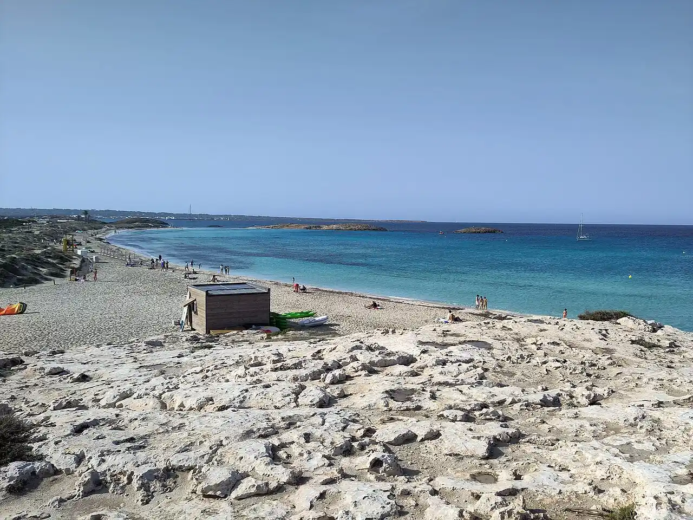

Ses Illetes
Formentera, Baléares, Espagne · baignade, snorkeling, paddle

Langue de sable blanc au nord de Formentera, dans le parc naturel de Ses Salines. Les herbiers de posidonie, protégés, donnent à l’eau sa transparence.
- Lieu
- Formentera, Baléares, Espagne
- Niveau
- Débutant
- Activités
- baignade, snorkeling, paddle
- Type d'eau
- Mer / océan
- Coordonnées
- 38.75, 1.43 (position approximative du secteur)
Dangers à connaître
- Énormément de bateaux au mouillage en été : baigne-toi dans la zone balisée.
- Ni relief ni ombre : soleil et vent très présents.
Le conseil d'Ocean Buddy
L’accès motorisé au parc est payant et limité en été : viens plutôt à vélo ou en bus depuis La Savina.
Ouvrir dans Ocean Buddy Télécharger sur l'App Store
Source : Fiche Ocean Buddy · septembre 2026 · à vérifier localement.